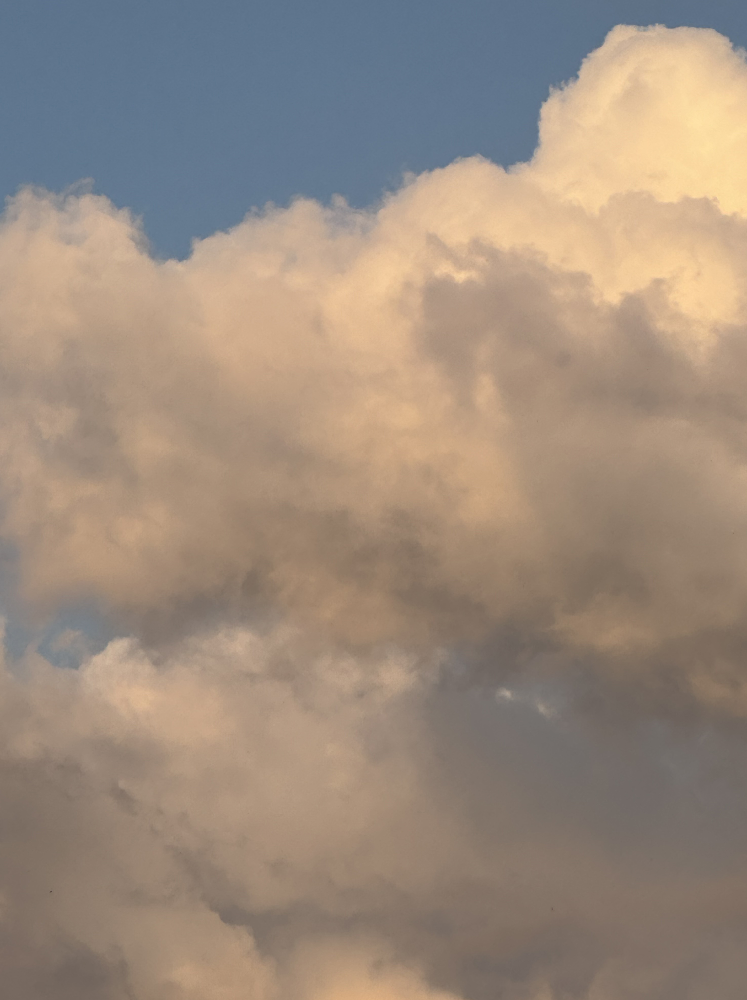

|
5
10
15
20
25
30
35
40
45
50
55
60
65
70
75
80
85
90
95
100
105
110
115
120
125
130
140
150
|
In der Juni Ausgabe der RaubvogelPost geht es um den Menschen, Natur, Liebe und Schönheit.
Mascha Kaléko/
Ich freu mich/
Ich freu mich, dass am Himmel Wolken ziehen
Und dass es regnet, hagelt, friert und schneit.
Ich freu mich auch zur grünen Jahreszeit,
Wenn Heckenrosen und Holunder blühen. –
Dass Amseln flöten und dass Immen summen,
Dass Mücken stechen und dass Brummer brummen.
Dass rote Luftballons ins Blaue steigen.
Dass Spatzen schwatzen. Und dass Fische schweigen.
Ich freu mich, dass der Mond am Himmel steht
Und dass die Sonne täglich neu aufgeht.
Dass Herbst dem Sommer folgt und Lenz dem Winter,
Gefällt mir wohl. Da steckt ein Sinn dahinter,
Wenn auch die Neunmalklugen ihn nicht sehn.
Man kann nicht alles mit dem Kopf verstehn!
Ich freue mich. Das ist des Lebens Sinn.
Ich freue mich vor allem, dass ich bin.
In mir ist alles aufgeräumt und heiter:
Die Diele blitzt. Das Feuer ist geschürt.
An solchem Tag erklettert man die Leiter,
Die von der Erde in den Himmel führt.
Da kann der Mensch, wie es ihm vorgeschrieben,
– Weil er sich selber liebt – den Nächsten lieben.
Ich freue mich, dass ich mich an das Schöne
Und an das Wunder niemals ganz gewöhne.
Dass alles so erstaunlich bleibt, und neu!
Ich freue mich, dass ich ... Dass ich mich freu.
Ralph Waldo Emerson/
Nature/
Chapter 1/
To go into solitude, a man needs to retire as much from his chamber as from society. I am not solitary whilst I read and write, though nobody is with me. But if a man would be alone, let him look at the stars. The rays that come from those heavenly worlds, will separate between him and what he touches. One might think the atmosphere was made transparent with this design, to give man, in the heavenly bodies, the perpetual presence of the sublime. Seen in the streets of cities, how great they are! If the stars should appear one night in a thousand years, how would men believe and adore; and preserve for many generations the remembrance of the city of God which had been shown! But every night come out these envoys of beauty, and light the universe with their admonishing smile.
The stars awaken a certain reverence, because though always present, they are inaccessible; but all natural objects make a kindred impression, when the mind is open to their influence. Nature never wears a mean appearance. Neither does the wisest man extort her secret, and lose his curiosity by finding out all her perfection. Nature never became a toy to a wise spirit. The flowers, the animals, the mountains, reflected the wisdom of his best hour, as much as they had delighted the simplicity of his childhood.
When we speak of nature in this manner, we have a distinct but most poetical sense in the mind. We mean the integrity of impression made by manifold natural objects. It is this which distinguishes the stick of timber of the wood-cutter, from the tree of the poet. The charming landscape which I saw this morning, is indubitably made up of some twenty or thirty farms. Miller owns this field, Locke that, and Manning the woodland beyond. But none of them owns the landscape. There is a property in the horizon which no man has but he whose eye can integrate all the parts, that is, the poet. This is the best part of these men's farms, yet to this their warranty-deeds give no title.
To speak truly, few adult persons can see nature. Most persons do not see the sun. At least they have a very superficial seeing. The sun illuminates only the eye of the man, but shines into the eye and the heart of the child. The lover of nature is he whose inward and outward senses are still truly adjusted to each other; who has retained the spirit of infancy even into the era of manhood. His intercourse with heaven and earth, becomes part of his daily food. In the presence of nature, a wild delight runs through the man, in spite of real sorrows. Nature says, he is my creature, and maugre all his impertinent griefs, he shall be glad with me. Not the sun or the summer alone, but every hour and season yields its tribute of delight; for every hour and change corresponds to and authorizes a different state of the mind, from breathless noon to grimmest midnight. Nature is a setting that fits equally well a comic or a mourning piece. In good health, the air is a cordial of incredible virtue. Crossing a bare common, in snow puddles, at twilight, under a clouded sky, without having in my thoughts any occurrence of special good fortune, I have enjoyed a perfect exhilaration. I am glad to the brink of fear. In the woods too, a man casts off his years, as the snake his slough, and at what period soever of life, is always a child. In the woods, is perpetual youth. Within these plantations of God, a decorum and sanctity reign, a perennial festival is dressed, and the guest sees not how he should tire of them in a thousand years. In the woods, we return to reason and faith. There I feel that nothing can befall me in life, no disgrace, no calamity, which nature cannot repair. Standing on the bare ground, my head bathed by the blithe air, and uplifted into infinite space, all mean egotism vanishes. I become a transparent eye-ball; I am nothing; I see all; the currents of the Universal Being circulate through me; I am part or particle of God. The name of the nearest friend sounds then foreign and accidental: to be brothers, to be acquaintances, master or servant, is then a trifle and a disturbance. I am the lover of uncontained and immortal beauty. In the wilderness, I find something more dear and connate than in streets or villages. In the tranquil landscape, and especially in the distant line of the horizon, man beholds somewhat as beautiful as his own nature.
The greatest delight which the fields and woods minister, is the suggestion of an occult relation between man and the vegetable. I am not alone and unacknowledged. They nod to me, and I to them. The waving of the boughs in the storm, is new to me and old. It takes me by surprise, and yet is not unknown. Its effect is like that of a higher thought or a better emotion coming over me, when I deemed I was thinking justly or doing right.
Yet it is certain that the power to produce this delight, does not reside in nature, but in man, or in a harmony of both. It is necessary to use these pleasures with great temperance. For, nature is not always tricked in holiday attire, but the same scene which yesterday breathed perfume and glittered as for the frolic of the nymphs, is overspread with melancholy today. Nature always wears the colors of the spirit. To a man laboring under calamity, the heat of his own fire hath sadness in it. Then, there is a kind of contempt of the landscape felt by him who has just lost by death a dear friend. The sky is less grand as it shuts down over less worth in the population.
|
5
10
15
20
25
30
35
40
45
50
55
60
65
70
75
80
85
90
95
100
105
110
115
120
125
130
140
150
155
|


|